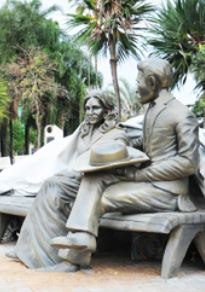

Projeto MonumentoID
Dando identidade os monumentos e lugares histórios do nosso país.
Olá você é o visitante numero:
Estátuas de Franscisco Barretos e sua esposa Ana Barretos.
As estátuas foram construidas em concreto pelo artista barretense Walter Curcino.
Contatos: halexandrelord@hotmail.com
Projeto desenvolvido por: Halexandre Lord - Barretos/SP